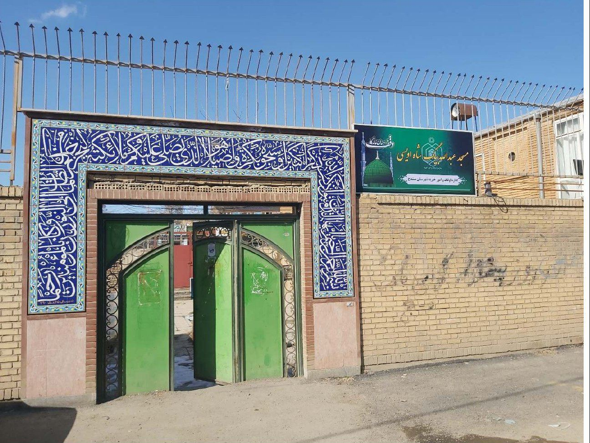
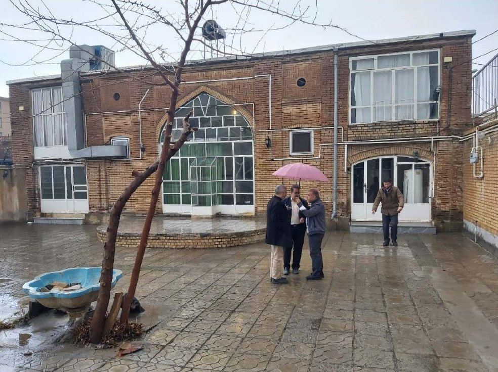
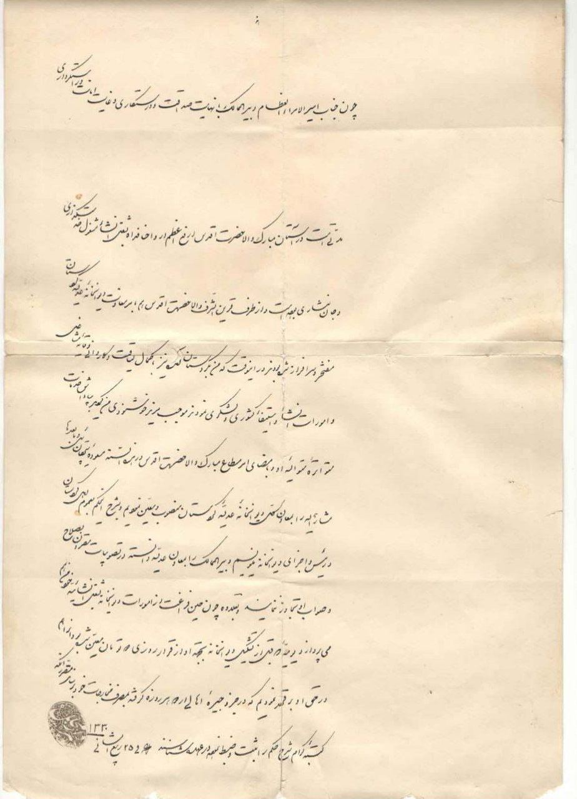
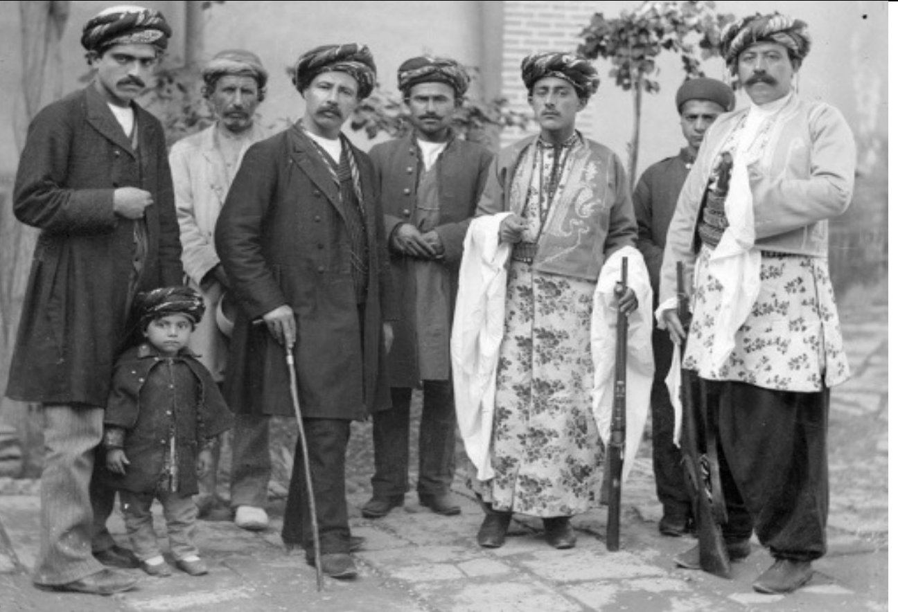
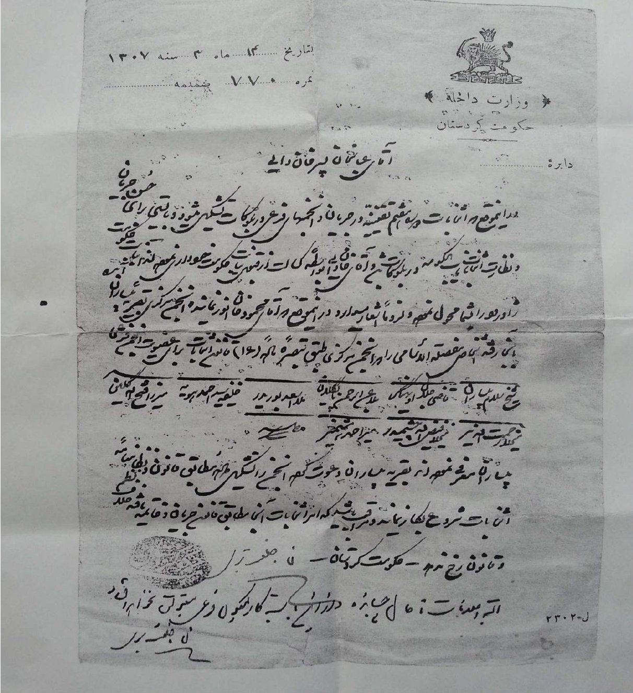
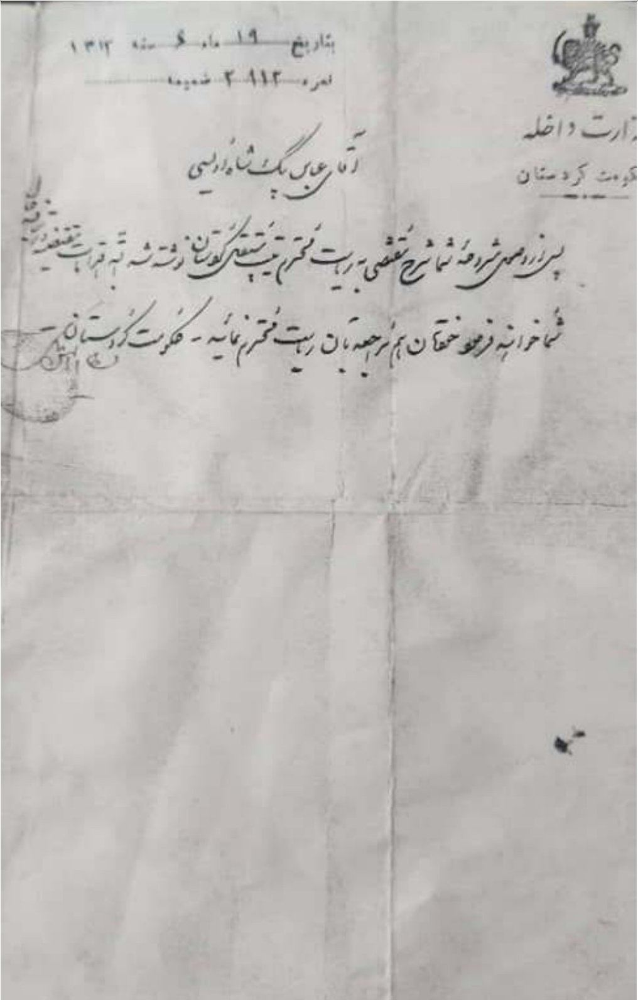
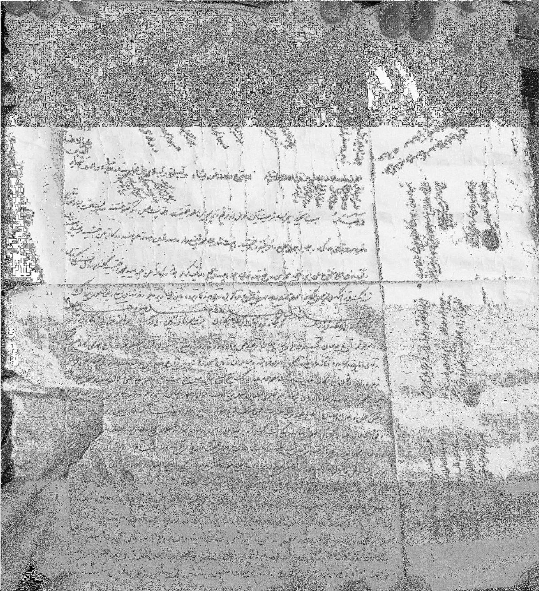
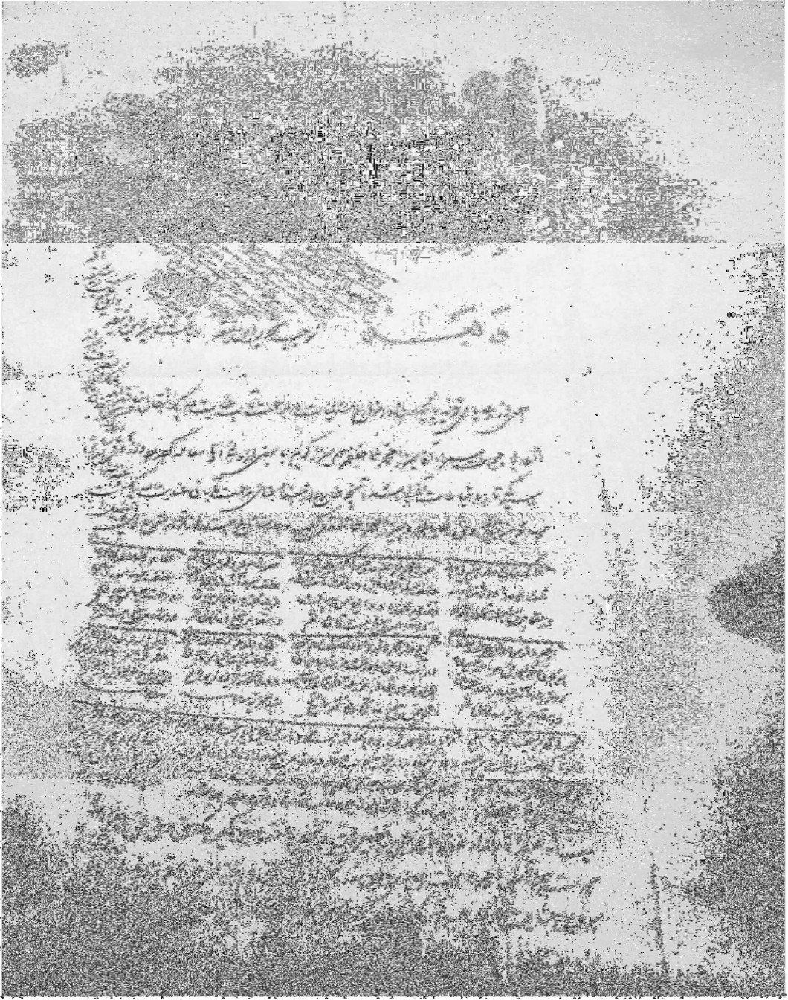
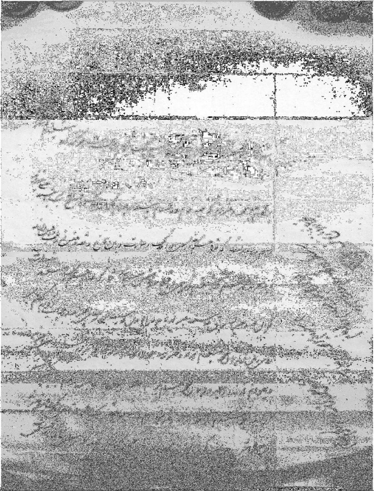

معرفی خاندان شاه اویسی
در جهانی که با سرعت به سوی فراموشی ریشهها و گذشتهها پیش میرود، بازگشت به تاریخ خانوادگی نهتنها یک کنجکاوی شخصی، بلکه تلاشی برای بازسازی بخشی از هویت است.
ساختن یک شجرهنامه، باز کردن پنجرهای است به گذشتهی کسانی که پیش از ما زیستهاند، تصمیمهایی گرفتهاند، مهاجرت کردهاند، رنج کشیدهاند و راه را برای بودنِ امروز ما هموار کردهاند.
تنظیم و تهیه این شجرهنامه، که تاریخ آن به حدود هفتصد و پنجاه سال شمسی پیش بازمیگردد، تنها گردآوری اسامی و تاریخها نیست، بلکه تلاشی است برای پیوند دادن نسلها، درک بهتر ریشههای فرهنگی، زبانی و جغرافیایی خانواده و همچنین بازخوانی میراث انسانی و اخلاقی که از پیشینیانمان به ما رسیده است، میباشد و تلاشی است برای زنده نگه داشتن حافظه خانوادگی و حفظ بخشی از تاریخ که ممکن است بهسادگی فراموش شود. این اقدام روایتی است از نسلهایی که زندگی کردهاند، جنگیدهاند، مهاجرت کردهاند و هر کدام به شکلی بخشی از ما شدهاند.
آدمها همیشه دوست داشتهاند ریشههایشان را بشناسند، اینکه از کجا آمدهایم، نیاکانمان چه کسانی بودهاند، چه زندگیای داشتهاند و چطور مسیرشان به امروز ما رسیده، سؤالاتی است که پاسخدادن به آنها جالب و الهامبخش است.
خانواده شاه اویسی، اولاد و احفاد خواجه شاهویس غیبی بوده که در سنندج متوطن شدهاند و دارای نام خانوادگی شاه اویسی، دبیر شاه اویسی و آذر بهرام میباشند.
در پایان، از تمامی فرهیختگان، بستگان و علاقهمندان به تاریخ و هویت این خاندان، صمیمانه درخواست میشود چنانچه اطلاعات، خاطرات، روایت، اسناد، تصاویر یا هرگونه پیشنهاد اصلاحی در اختیار دارند که میتواند در تکمیل، تصحیح و غنای این مجموعه سودمند باشد، لطف فرمایند آن را از طریق نشانی پست الکترونیکی زیر ارسال کنند. بیگمان، هر روایت و هر سند، هرچند به ظاهر کوچک، میتواند حلقهای ارزشمند در تکمیل زنجیره تاریخ این خاندان و میراثی ماندگار برای نسلهای آینده باشد. امید است با همدلی و مشارکت شما، این مجموعه به مرجعی هرچه کاملتر، دقیقتر و شایستهتر تبدیل شود.
اسناد، عکس یا روایتی از این خاندان دارید؟
tahsinshahoveisi@gmail.comبر خود لازم میدانم از جناب آقای فرنوش دبیر شاه اویسی، که با راهنماییها، پیشنهادها و رهنمودهای ارزشمند خود در تدوین و گردآوری این مجموعه یاریرسان من بودهاند صمیمانه سپاسگزاری کنم.
خواجه شاهویس غیبی (سوزی)
نیای خاندان شاه اویسی — عارف و شاعر قرن هشتم هجری
اسمش خواجه شاهویس غیبی، از اهالی بلده طیبه مزبوره و اعلی جد خسرو بیگ و عبدالله بیگ منشی است. وجه تسمیه او به «غیبی» اینکه در اوایل حال، خود را مشغول تزکیه باطن و ریاضات ساخته و بسیر و سلوک و مقامات اعلی پرداخته تا در اندک مدتی، ترقیات عظیم در آن مقام بجهت او روی داده، صاحب حال و جذب احوال شده و از جمله اولیاء الله محسوب است. خوارق عادت از او بسیار بظهور پیوسته، از آنجمله گویند در حین وفات از نظر ارباب بصر غایب گشته، اشتهار اسم او به «غیبی» بدین علت است. غرض مردی نیک ذات و پسندیده صفات بوده، در زمان خود از زمره ارباب کمال و اصحاب افضال شمرده میشده و در بستن اشعار طبع شکفتهای داشته است.
خواجه شاه ویس غیبی متخلص به سوزی از اهالی شارباژیر کردستان عراق (سلیمانیه کنونی) است که بعدها اولاد و احفاد وی به کردستان ایران مهاجرت کرده و سرانجام در سنندج متوطن شدهاند و اکنون افراد این خانواده به «دبیر شاه اویسی» شهرت دارند.
رونق سنندجی در تذکرهٔ خود به نام حدیقه امان اللهی در بارهٔ خواجه شاهویس چنین نوشته است: «وجه تسمیه او به غیبی اینکه در اوایل، حال خود را مشغول تزکیهٔ باطن و ریاضات ساخته و به سیر و سلوک مقامات اعلی، پرداخته تا در اندک مدتی ترقیات عظیم در آن مقام به جهت او روی داده و صاحب حال و جذب احوال شده و از جمله اولیاء الله محسوب است. خوارق عادات از او بسیار به ظهور پیوسته است اشتهار اسم او به غیبی بدین علت است. غرض مردی نیک ذاتِ پسندیده صفات بوده از زمرهٔ ارباب کمال و اصحاب افضال شمرده میشده و در بستن اشعار طبع شکفتهای داشته.» … باری خواجه شاهویس انسانی آراسته به فضایل روحانی و پیراسته از رذایل نفسانی، شاعر توانایی نیز بوده و «سوزی» تخلص میکرده و در قرن هشتم میزیسته است.
ابراهیم بیگ وزیر
نوه خواجه شاه ویس غیبی — اعلی جد خاندان شاهویسیان
بالول بیگ اردلان
نام این امیر را بعضی بابلول و برخی بابلو نوشتهاند. گویا در اصل بالول (بهلول) بوده است. در هر حال بالول بیگ فرزند امیر حسن است که پس از فوت پدر درسنه ۷۸۴ (ه.ق) زمام امور را به دست گرفته و به حکمرانی پرداخته است. او انسانی دلیر، متهور، تندخو و مبذر بوده و در مجازات خطاکاران شدت عمل به کار برده و متمردین و مخالفین خود را بدون عفو و اغماض تنبیه کرده است و این امر موجب شده که آحاد و افراد مردم از کشوری و لشکری کینه او را به دل گرفته و دو بار بر او شوریدهاند، اما ابراهیم بیگ اعلی جد خاندان شاهویسیان که سمت وزارت او را داشته و انسانی اندیشمند و با تجربه و مدبر بوده است، هر بار شورشیان را آرام کرده و غایله را خاموش ساخته است. بالول بیگ پس از ۴۴ سال حکومت در گذشته است.
پس از فوت امیرحسن اردلان پسرش، بابلوبیگ در سال ۷۸۴ هجری بر حکومت نشسته این امیرزاده شخصی خودسر و متهور و دست باد بوده عشق مفرطی هم به خونریزی و ظلم و ستم داشته در مقابل یک خطای کوچک امر به کشتن و سر بریدن و تخماق کردن داده است. به این جهت لشگری و کشوری از او مأیوس و در هراس بودهاند دو سه مرتبه رعایا بر او شوریده ابراهیم بیگ وزیر که شخص عاقل و با تجربه و دنیا دیدهای بوده و در دربار امیر حسن مقام وزارت و سمت لله گی (سرپرست و مربی) نسبت به امیرزاده داشته شورشیان را اسکات و غائله را خاموش ساخته است.
بابلول بیگ در سنه ۷۷۵ هجری قمری برمسند ایالت متمکن شده و به تسویه امورات حکمرانی پرداخته است بابلول بیگ شخص بسیار شجیع و رشیدی بوده و شجاعت او به درجه تهور رسیده میل مفرط بخون ریختن زیردستان داشته و از تقصیرات اندک هم صرف نظر نکرده است. به این واسطه، همه وقت، کشوریان افسرده و لشگریان از وضع حالت او آزرده بوده سه مرتبه رعایا براو شوریدهاند. ابراهیم نامی که وزیر او و شخص دانشمند و خوش رفتاری بوده، شورشیان را دلالت کرده و ساکت نموده و او را مجدداً در کار حکومت مستقل داشته است. ابراهیم بیگ وزیر، مساعی جمیله در رعیت داری و آسودگی عامه رعایا و برایا مصرف نموده و به واسطه حسن سلوک و درستکاری وزیر عاقل، مدت ۳۳ سال، بابلول در کردستان حکمرانی کرده است.
توضیح
در صفحه ۴۲۰ کتاب سنندج قدیم تألیف سید عبدالحمید حیرت سجادی، شخص ابراهیم بیگ وزیر، معرفی شده در کتاب تحفه ناصری، به خاندان وکیل نسبت داده شدهاست که بدینوسیله بنا به توضیحات و مستندات ذیل، به ضرس قاطع اعلام میشود که ادعای جناب حیرت سجادی در کتاب سنندج قدیم صحیح نبوده و مغایر با واقعیت و مستندات متقن میباشد.
در تشریح شجره خاندان وکیل در کتاب تاریخ کرد و کردستان تألیف آیت الله شیخ محمد مردوخ چنین آمده است:
«این خانواده از چهارصد سال قبل تشکیل سلسله داده اند یعنی یک قرن پیش از آبادی سنه دژ، ایشان خانوادهای بودهاند و شغل وکالت سنه را داشتهاند. سر سلسلهی این خانواده خسروبیگ بوده، پسر درویش بیگ، پسر حسین بیگ، پسر خالد بیگ معروف به میرخوشناو، خسروبیگ پنج پسر داشته: ۱. ماموبیگ، ۲. ابراهیم بیگ وکیل، ۳. محمد علی سلطان، ۴. یوسف بیگ، پدر نصراله بیگ، ۵. حسین بیگ …»
- سنه دژ (سنندج) در سال ۱۰۴۶ هجری قمری مرکز حکومت اردلانها شده است و مطابق توضیح آیت الله شیخ محمد مردوخ، تشکیل سلسله خاندان وکیل به سال ۹۴۶ هجری قمری برمیگردد (یعنی اواسط قرن دهم) در حالی که ابراهیم بیگ وزیر در سال ۷۴۶ در دربار امیر حسن خان اردلان و در سال ۷۷۵ قمری در دربار بابلول بیگ مقام وزارت داشته است (یعنی اواسط قرن هشتم) بنابراین دوران وزارت ابراهیم بیگ وزیر حدود ۲۰۰ سال پیشتر از زمان تشکیل سلسله خاندان وکیل بوده است.
- در تشریح شجره خاندان وکیل، ابراهیم بیگ، تحت عنوان ابراهیم بیگ وکیل معرفی شده است نه ابراهیم بیگ وزیر و از سوی دیگر، در این شجره هیچکدام از اعضای شجره عنوان وزیر نداشتهاند.
- جناب حیرت سجادی در صفحه ۲۴۶ کتاب سنندج قدیم در تشریح شجره خاندان شاهویسیان، ابراهیم بیگ وزیر را که در اوایل قرن هشتم هجری در دربار امیر حسن خان اردلان مقام وزارت داشته، سرسلسله طایفه شاهویسیان میداند.
- در کتاب تاریخ مشاهیر کرد تألیف بابا مردوخ روحانی (به شرح فوق) ابراهیم بیگ وزیر که در دربار بابلول بیگ مقام وزارت داشته، اعلی جد خاندان شاهویسیان معرفی شده است.
- درکتاب تاریخ کرد و کردستان تألیف آیت الله شیخ محمد مردوخ در تشریح شجره خاندان شاهویسیان ابراهیم بیگ وزیر را که در اوایل قرن هشتم هجری در دربار امیر حسن خان اردلان مقام وزارت داشته، سرسلسله طایفه شاهویسیان میداند و همچنین در همین کتاب در توضیح حکومت بابلول بیگ، ضمن اینکه وزارت ابراهیم بیگ در دوران حکومت امیر حسن خان اردلان در قلعه حسن آباد را تایید کرده، اشاره به داشتن مسئولیت سرپرستی و تربیت بابلول بیگ را در دوران حکومت پدرش نموده است و نهایتا بعد از فوت امیر حسن خان به وزارت حکومت بابلول بیگ میرسد.
اسماعیل بیگ وزیر
از نوادگان ابراهیم بیگ وزیر و وزیر خان احمد خان اردلان
خان احمد خان اردلان (پسر هلو خان) از زرین کلاه خانم خواهر شاه عباس صفوی پسری به نام سرخاب بیگ داشت که شاه عباس از ابتدای کودکی او را به دربار خود خوانده بود تا در آنجا با تعلیم و تربیت شایسته درباری، آشنا شود سرخاب بیگ به حد رشد رسید، از هر جهت جوانی بود آراسته به زیور فضل و کمال و آشنا با فنون سواری و تیراندازی و صفات مردانگی و دلیری، از همگنان برتر و والاتر. پس از درگذشت شاه عباس، شاه صفی بر اریکهی سلطنت مینشیند. مُعاندین بر جاه و مقام او (سرخاب بیگ) در دربار شاه، حسد بردند و با حیله و نیرنگ ذهن شاه را نسبت به او مشوب ساختند و به اتهام خیانت نسبت به دربار و داعیه سلطنت متهمش کردند شاه صفی بدون تحقیق و استفسار، از فرط بدبینی درسنه ۱۰۳۹ ه.ق دستور داد که چشمان او را از حدقه بیرون آوردند خان احمد خان به محض شنیدن این خبر مشاعر خود را از دست داده دیوانه شد و شروع به حرکات غیر عادی نمود. اطرافیان و نزدیکانش برای اینکه این امر مخفی بماند او را مقید و محبوس ساختند و اسماعیل بیگ اعلی جد عنایت الله بیگ که در آن هنگام سمت وزارت اردلان را داشته به حُسن تدبیر مدت یک سال در اداره امور ولایات کوشید و نگذاشت به ارکان حکومت کردستان خللی وارد شود.
منابع
- تاریخ اردلان، تألیف مستوره اردلان
- تاریخ کرد و کردستان، تألیف آیت الله شیخ محمد مردوخ کردستانی
- تاریخ مشاهیر کرد، تألیف بابا مردوخ روحانی، جلد سوم
خسرو بیگ منشی
فرزند اسماعیل بیگ وزیر — تخلص «خسرو»
اسمش خسرو بیگ منشی فرزند اسماعیل بیگ وزیر از نسل خواجه شاهویس که به اسم (خسرو) هم تخلص میکرده است در دفاتر ولات عظیم الشان بمنصب جلیل و امر جمیل منشی باشی سرافراز و بین الاقران قرین اعتبار و اعزاز آمده. گویند مردی نیک ذات و حمیده صفات و از مشاهیر عظما و معاشر نجبا بوده اباعنجد (جد اندر جد) بمناصب مزبور مفتخر، چندی بعلت تواتر صدمات روزگار غدار که به بلده طیبه مذکوره روی آورده جناب مشارالیه عــار فرار بر خود قرار داده به ولایت خارج رفته و ترقیات عظیم کرده بعد از مدتی به دلیل «حب الوطن من الایمان»، باز به وطن مألوف مراجعت و به مرتبه خویش مباهی گشته غرض جناب ایشان نظماً نثراً سر دفتر فصحای بلاغت گستر و بلغای فصاحت پرور بودهاند. در رویه شاعری ماهر و کمال فضلش بر همگنان ظاهر. الحق در مراتب سخنوری داد فصاحت داده و عقدهٔ اشکال شعری بسر انگشت فکرت گشاده و گوی سبقت در میدان نکته سنجی از معاصرین ربوده. مردی شیرین زبان، سخندان و شخصی فهیم، فطانت بنیان، شرح کمالش از حیز اظهار و اعلان بیرون است و از تکرار اشعار و بیان افزون.
خسروبیگ منشی باشی (خسرو سنندجی) فرزند اسمعیل بیگ از نسل خواجه شاهویس که در شعر «خُسرو» تخلص میکرده از مقربان ولات اردلان بوده است که در دستگاه خسروخان بزرگ والی اردلان سمت منشی باشی داشته و ادیبی دانشمند و شاعری سخن سنج، بلیغ و نکته پرور، دارای صفات حمیده و اخلاق پسندیده بوده است. مدتی کردستان سنندج را ترک گفته و به خاک عثمانی مهاجرت کرده اما در آخر به سنندج بازگشته است. خسروبیگ پدر عبدالله بیگ متخلص به «راجی» است. بنابه نوشته مستوره در کتاب تاریخ اردلان خسروبیگ در سنه ۱۱۴۲ ه.ق در یکی از جنگها به شهادت رسیده است.
عبدالله بیگ منشی (راجی)
فرزند خسرو بیگ منشی، شاعر و منشی باشی ولات اردلان — شهادت ۱۱۹۱ هجری قمری
اسمش عبدالله بیگ منشی، ولد خسرو بیگ منشی و از نسل خواجه شاهویس غیبی (سوزی) است. الحق پسر و پدر هر دو از اجله اعاظم و اعزهٔ افاخم بوده اند. گویند به وفور ذهن و ذکاء ممتاز، و به منصب منشی باشی دفاتر ولات، با اقتدار سرافراز (بوده است)، درفن انشا کسی با او لاف همسری نزده. بشیوه نظم طبعش قادر و در بستن اشعار متین، سلیقه اش ماهر و درخدمت ولات عظام، اعتبار تمام داشته، به متانت رای، رزین و فطانت عقل، متین، همیشه اوقات عقدهٔ مهام مشکله بناخن فکرت او گشاده میشده. حسباً نسباً بین الخلایق مشهور و اسمش در بین اعالی و ادنی بنیکی ذات، مذکور است آنچه در تعریف و توصیف ایشان نویسم تحصیل حاصل است. غرض از هر مقوله اشعــار دارد. چون کلامش از شیرازه تدوین خالی مانده شعر ممتازی اکنون ازو در میان نیست.
عبدالله بیگ منشی، متخلص به «راجی» فرزند خسرو بیگ منشی و از نسل و تبار خواجه شاهویس غیبی «سوزی»، فاضلی بوده است، باهوش، ذکی، محترم و منشی باشی والی وقت اردلان خسرو خان بزرگ، و در فن انشا و شعر و شاعری توانا، دیوانش از بین رفته و فقط قطعاتی از او در حدیقه امان الهی و جُنگها باقیمانده است. عبدالله بیگ راجی در جنگی که بین محمد پاشا بابان و خسرو خان والی اردلان در تاریخ ۱۱۹۱ هجری قمری به شهادت رسیده است.
عبدالله بیگ منشی پدر یکی دیگر از منشیان این خانواده به نام عنایت الله بیگ وکیل میباشد.
عبدالله بیگ شاه اویسی (بانی مسجد)
فرزند عنایت الله بیگ وکیل و نوه عبدالله بیگ منشی (راجی)
عبدالله بیگ فرزند عنایت الله بیگ وکیل و نوه عبدالله بیگ منشی (راجی) میباشد. در کتاب آیینه سنندج تألیف مرحوم برهان ایازی در مورد مسجد عبدالله بیگ چنین آمده است:
«این مسجد توسط عبدالله بیگ اعلی جد دبیر شاه اویسی های سنندج بنا گردیده و محل ساختمان و زندگانی وی هم در این محل بوده و خانه و حیاط آن بسیار وسیع و با اهمیت بوده که با کشیدن خیابان شهدا (فرح سابق) قسمت شرقی خانه آنان وسط خیابان قرار گرفت و مسجد بقوت و سبک قدیمی خود باقی مانده است مرحوم سید توفیق مقدم استوار باز نشسته ارتش که از مریدان حاج شیخ جمیل و حاج شیخ عبدالرحمن طالبانی کرکوک بود در این مسجد تکیه و خانقاه تشکیل داد و مریدان وابسته تحت نظر سید توفیق مقدم در این مسجد گرد هم آمده و در شبهای جمعه و سه شنبه به ذکر و تهلیله و عبادت میپرداختند و سید توفیق بسال ۱۳۵۹ برحمت ایزدی پیوست و تکیه بحال تعطیل درآمد و اکنون همان مسجد عبدالله ببگ شاه اویسی میباشد که دارای امام و جماعت است.»
در دهه ۷۰ شمسی مریدان شیخ طالبانی با کسب اجازه از مرحوم ناصرخان دبیر شاه اویسی (از نوادگان بانی مسجد و بزرگ خاندان وقت) مسجد عبدالله بیگ را در اختیار گرفتند و عبادات و مناسک دینی خود را در این مکان بجای میآورند و از همینرو مسجد عبدالله بیگ تحت نام تکیه عبدالله بیگ در شهر سنندج معروف است. بنای تاریخی مسجد واقع درخیابان شهدای سنندج، در مجاورت عمارت مشیر دیوان، که در سال ۱۳۸۰ با شماره ۴۴۷۳ در فهرست آثار ملی کشور تحت عنوان «تکیه عبدالله بیگ» به ثبت رسیده است.
از آنجاییکه بنای مسجد تحت عنوان «مسجد عبدالله بیگ شاه اویسی» مسبوق به سابقه است و در اداره اوقاف شهرستان سنندج دارای پرونده مفتوح بوده و همچنین رقبات متعددی را داراست، نوادگان بانی مسجد به جهت حفظ نیت بانی مسجد مبنی بر حفظ نام «مسجد» بر بنای آن، با پیگیریهای مستمر در اداره میراث فرهنگی استان کردستان و وزارت خانه متبوع و همچنین اداره اوقاف شهرستان سنندج، موجبات حذف عنوان «تکیه» از نام بنا را فراهم نموده و نهایتا نام بنای مزبور تحت عنوان «مسجد عبدالله بیگ شاه اویسی» در اداره میراث فرهنگی استان کردستان در سال ۱۴۰۰ شمسی به ثبت رسید.
در کتاب تاریخ کرد و کردستان تألیف آیت الله محمد مردوخ در تشریح شجره طایفه شاه اویسی، «عبدالله بیگ فرزند عنایت الله بیگ بانی مسجد جنب خانه خودشان» معرفی شده است. لازم به توضیح است در تشریح شجره طایفه شاه اویسی در کتاب مزبور نواقصی موجود بوده و چندین شخص از جمله خسرو بیگ منشی فرزند اسماعیل بیگ وزیر، محمد بیگ فرزند ارشد بانی مسجد و خاندایی فرزند محمد بیگ، از قلم افتاده است.


عبدالله بیگ (بانی مسجد) دارای دو پسر ۱- محمد بیگ پدر خاندایی ۲- هدایت بیگ پدر فضل الله خان دبیرالممالک، میباشد.
فضل الله خان دبیرالممالک و فرزندش ناصر خان دبیر شاه اویسی
در مقاله «در باره خاندان شاه اویسی» به نویسندگی نوید نقشبندی عضو هیات علمی پژوهشکده کردستان شناسی دانشگاه کردستان و ماریه شاه اویسی چنین آمده است:
«از معاصرین این خاندان فضل الله خان دبیر الممالک فرزند هدایت الله بیگ است که در سال ۱۳۳۰ هجری قمری بر اساس حکمی که تصویر آن ضمیمهی این مقاله است (تصویر ذیل) معاونت کل عدلیه کردستان را عهده دار بوده است. وی صاحب خط بسیار زیبا بوده و به همین دلیل لقب دبیر الممالک را از آن خود ساخته است. ناصر خان دبیر شاه اویسی فرزند دبیر الممالک، چهره نام آشنای فرهنگی و از معاصران دانشمند گرانمایه جناب برهان الدین حمدی، خدمتگزار فرهنگ و ادب شهر سنندج و منشا خدمات اداری است. ایشان به دلیل تبحر در واژه شناسی فارسی و عربی به عنوان لغوی ارزندهای در اداره آموزش و پرورش کردستان بوده است که در دهه چهل شمسی در سمت شهردار سنندج انجام وظیفه کرده برجسته صاحب نام بوده است.»

عبدالله بیگ ملقب به خاندایی
فرزند محمد بیگ
در کتاب خاطرات میرزا حسین خان دیوان بیگی نقل شده است که روستای پایگلان که روستای معتبری بوده (جزو ماترک عنایت الله بیگ) و عمدتا تحت مالکیت عبدالله بیگ (بانی مسجد) و برادرش فتح الله بیگ وزیر بوده است و اینکه میرزا رضا علی دیوان بیگی بزرگ (پدر میرزا حسین خان) بر سر املاک پایگلان اختلافاتی با ورثه عبدالله بیگ (بانی مسجد) و فتح الله بیگ وزیر داشته است و همین اختلافات نهایتا موجب ازدواج دو دختر میرزا رضا علی دیوان بیگی با محمد بیگ و اسماعیل بیگ که پسر عمو بوده اند شده است. محمد بیگ (فرزند عبدالله بیگ بانی مسجد) با همسر خود رعنا خانم دیوان بیگی صاحب فرزندی به نام عبدالله بیگ، ملقب به خاندایی شدهاند و دختر دوم دیوان بیگی به نام فاطمه خانم همسر اسماعیل بیگ فرزند فتح الله بیگ وزیر شده است. گفته میشود ملقب شدن عبدالله بیگ به خاندایی به واسطه این بوده است که در زمان طفولیت ایشان، هر وقت مورد عنایت و محبت دایی خود، یعنی میرزا حسین خان دیوان بیگی قرار میگرفت با عنوان «خانه که ی دایی یا همان خانِ داییش» خطاب میگرفت و رفته رفته عبدالله بیگ کودک، لقب خاندایی را به خود گرفته است. در عکس زیر شخص عصا به دست میرزا حسین خان دیوان بیگی و نفر اول از سمت چپ محمد بیگ شاه اویسی و یحتمل کودک موجود در عکس عبدالله بیگ شاه اویسی (خاندایی) میباشند. نظر به اینکه روایت یا سند معتبری در ارتباط با هویت این کودک در دسترس نیست به طور یقین نمیتوان گفت که ایشان شخص خاندایی باشند ولی از آنجاییکه خاندایی تنها فرزند محمد بیگ بوده است و همچنین نحوه قرارگیری کودک در کنار محمدبیگ، این احتمال را که این کودک شخص خاندایی باشد بسیار تقویت و قریب به یقین میکند.
خاندایی تا سال ۱۳۰۷ شمسی نیابت حکومت کردستان در منطقه ژاورود را داشته است و به سبب کسالت، این نیابت به فرزند ارشدش عباس خان (عباس خاندایی) واگذار میگردد.

اسناد تاریخی خاندان شاه اویسی
احکام، نامهها و قولنامههای بازمانده از نیاکان خاندان شاه اویسی. برای مشاهده در اندازه بزرگ روی هر سند کلیک کنید.




